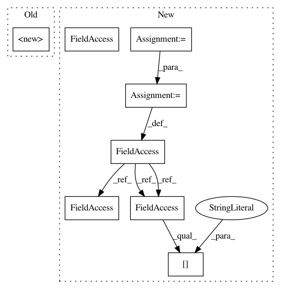

4b83c1070cebd0d996ba2cc69779dcb66d5d0032,autokeras/search.py,BayesianSearcher,__init__,#BayesianSearcher#Any#Any#Any#Any#Any#Any#Any#Any#Any#Any#,199
Before Change
beta=constant.BETA,
kernel_lambda=constant.KERNEL_LAMBDA,
t_min=constant.T_MIN):
super().__init__(n_classes, input_shape, path, verbose, trainer_args, default_model_len, default_model_width)
self.gpr = IncrementalGaussianProcess(kernel_lambda)
self.search_tree = SearchTree()
self.init_search_queue = None
self.init_gpr_x = []
After Change
self.path = path
self.model_count = 0
self.descriptors = {}
self.trainer_args = trainer_args
self.default_model_len = default_model_len
self.default_model_width = default_model_width
if "max_iter_num" not in self.trainer_args:
self.trainer_args["max_iter_num"] = constant.SEARCH_MAX_ITER
self.gpr = IncrementalGaussianProcess(kernel_lambda)
self.search_tree = SearchTree()
In pattern: SUPERPATTERN
Frequency: 3
Non-data size: 8
Instances
Project Name: keras-team/autokeras
Commit Name: 4b83c1070cebd0d996ba2cc69779dcb66d5d0032
Time: 2018-05-29
Author: jhfjhfj1@gmail.com
File Name: autokeras/search.py
Class Name: BayesianSearcher
Method Name: __init__
Project Name: keras-team/autokeras
Commit Name: 29207539638be76123e2b9db9fd7cf54ee77c898
Time: 2018-05-25
Author: jin@tamu.edu
File Name: autokeras/search.py
Class Name: BayesianSearcher
Method Name: __init__
Project Name: hanxiao/bert-as-service
Commit Name: 6ac655533f3faede22d4e44d41a6b6f4b1891ff4
Time: 2019-01-18
Author: hanhxiao@tencent.com
File Name: benchmark.py
Class Name:
Method Name:
Project Name: keras-team/autokeras
Commit Name: 4b83c1070cebd0d996ba2cc69779dcb66d5d0032
Time: 2018-05-29
Author: jhfjhfj1@gmail.com
File Name: autokeras/search.py
Class Name: BayesianSearcher
Method Name: __init__